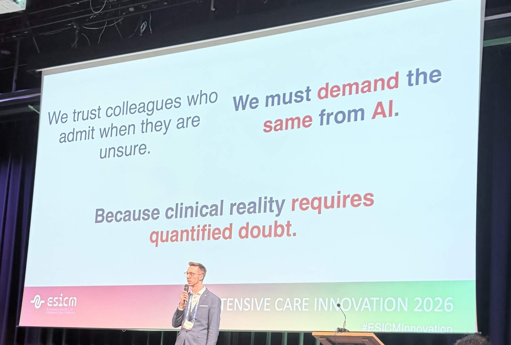

From 5 to 7 February, Camila took part in Intensive Care Innovation 2026, the European Society of Intensive Care Medicine's forum on technology and innovation in critical care, held at Pakhuis de Zwijger in Amsterdam. She joined the hackathon of INDICATE, the EU-funded project building a federated ICU data infrastructure across Europe, where clinicians, engineers, data scientists and start-ups worked on equitable AI performance across European ICU populations and on sustainable use of federated data.